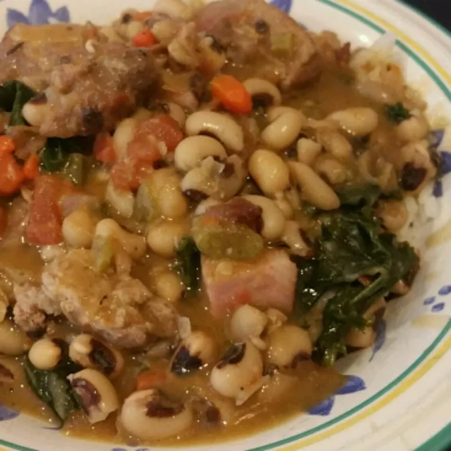

Black-Eyed Peas

Description
Black-eyed peas and three kinds of
pork are used in this recipe. How
can that not bring good fortune? This is my variation of Hoppin' John, which is black-eyed peas, rice, and pork stewed together, usually served with some kind of greens and cornbread.
Ingredients
- 1 pound dried black-eyed peas
- 1 pound pork neck bones
- 3 slices bacon, cut into 1/2-inch piece
- 1 cup diced onion
- 1 cup diced celery
- 1 cup diced carrot
- 3 cloves garlic, chopped
- 6 cups cold water
- 1 bay leaf
- 1 teaspoon dried thyme
- ½ teaspoon ground cumin
- ½ teaspoon ground black pepper
- 1 pinch cayenne pepper, or to taste
- 1 (10 ounce) can diced tomatoes with green chile peppers
- 1 teaspoon salt
- 6 ounces smoked ham, diced
- 1 bunch kale, ribs removed and leaves torn into pieces
Directions
-
Place black-eyed peas into a
large container and cover with several
inches of cool water; let stand, 8
hours to overnight. Drain and set aside.
-
Cook pork neck bones and bacon in a Dutch oven
over medium heat until lightly browned,
about 5 minutes. Add onion, celery, and carrot;
cook and stir until softened, 6 to 7 minutes.
Stir in garlic and cook 1 minute.
-
Pour cold water and black-eyed peas into pork
mixture; increase heat to high. Stir in bay
leaf, thyme, cumin, black pepper, and cayenne
pepper; bring to a simmer. Reduce heat to low,
cover, and simmer for 45 minutes.
-
Stir in tomatoes with green chile peppers
and salt. Simmer uncovered until beans are
tender, about 40 minutes.
-
Remove neck bones; separate any meat from
bones, return meat to the Dutch oven, and
discard bones.
-
Stir in diced ham and kale; cook until
greens are tender, 10 to 15 minutes.
Serve over rice.